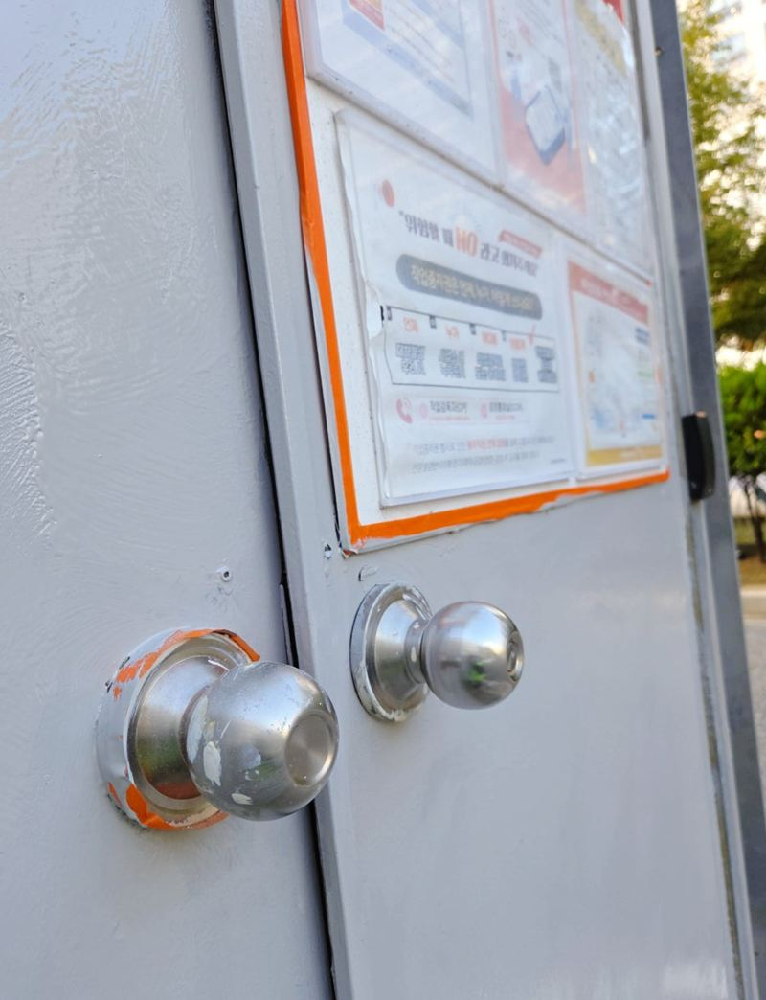

홈 › 조경·시설물
단지 가지치기·철문 도장
구조물 보수 현장
단지 관리를 하다 보면 업체를 따로 부르기 애매한 일들이 생겨요. 창을 가리는 나뭇가지, 녹이 번진 철문, 흔들리는 현수막 걸이대 같은 것들이에요. 이런 자잘한 시설 일을 한 번 방문에 모아서 처리할 수 있어요.

이런 일을 맡겨 주세요
- 가지치기·벌목전선·창문·주차 차량에 닿는 가지를 정리하고, 죽은 나무는 잘라 내요.
- 철문·난간 도장녹을 갈아 내고 방청 프라이머를 바른 뒤 칠을 다시 해요.
- 게시 시설 제작현수막 걸이대·지지대를 현장 크기에 맞춰 만들어 세워요.
철문 도장, 순서가 중요한 이유
녹 위에 바로 칠하면 몇 달 지나 칠이 들뜨고 녹이 다시 올라와요. 그래서 녹 제거 → 방청 프라이머 → 마감 도장 순서를 지키고, 층마다 마르는 시간을 둬요. 가지치기는 새 잎이 나기 전이나 장마 전처럼 시기를 고르면 정리가 오래가요.
지역별 조경·시설물 현장
조경·시설물 질문
높은 나무도 자를 수 있나요?
높이와 주변 전선·건물 상황을 보고 장비와 인원을 정해요. 나무 전체 사진을 보내 주세요.
잘라 낸 가지는 치워 주나요?
현장마다 처리 방법이 달라서 상담할 때 함께 정해요.
손볼 시설이나 나무 전체가 나오게 찍어서 보내 주세요.
전화 상담 010-4517-9872